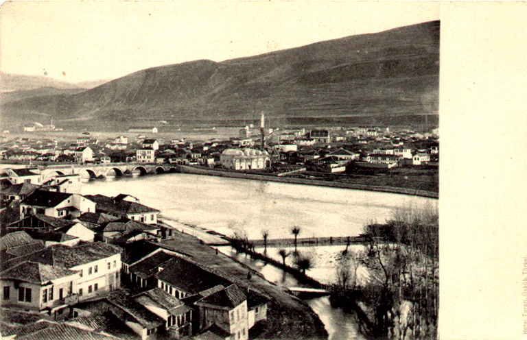
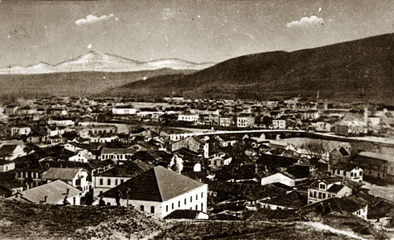
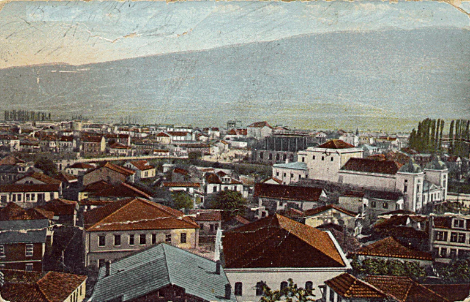
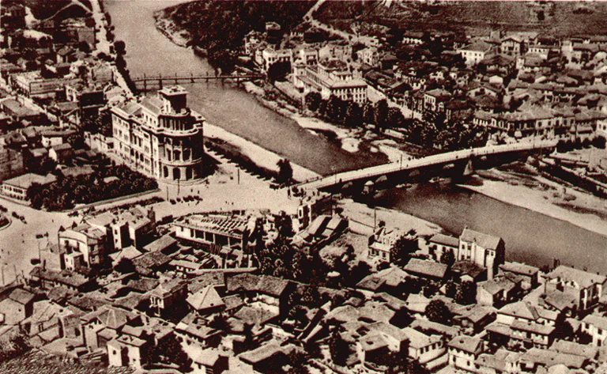
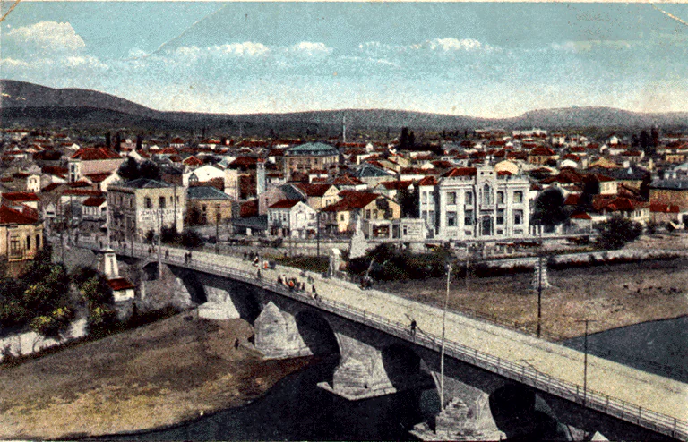
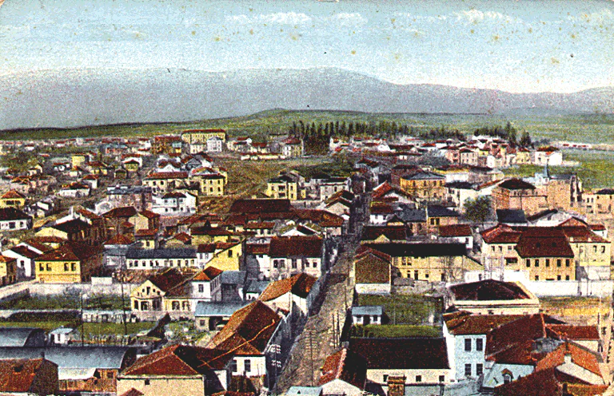

Skoplje 1916. - 1917. panorama 2
Dokumenti iz Balkanskih ratova
- Godina
- 1916-1917
- Trajanje
- 00:12

Skoplje krajem 19. stoljeća. Pogled na neizgrađene prostore nove mahale na desnoj obali Vardara. U pozadini se vidi gradska tvrđava - Kale. U desnom dijelu je brdo Gazi Baba.

Kraj 19. stoljeća. Neizgrađeni prostori na desnoj obali rijeke Vardar. Tek malen broj kuća uz samu rijeku. U pozadini uzdiže se skopska tvrđava - Kale.

Skoplje 1888. godine, snimljeno s brda Gazi Baba prema skopskoj tvrđavi - Kale.

Pogled na grad sa Sahat-kule prema sjevernom dijelu Skoplja sa starim turskim i makedonskim mahalama. U pozadini je brdo Gazi Baba. (kraj 19. stoljeća)

Skoplje - pogled na stari dio sa starom čaršijom. U pozadini se vidi Mustafa-pašina džamija, a desno od nje skopska tvrđava - Kale s vojarnama. U prednjem planu vide se stambene zgrade u mahali Gazi Baba - kraj 19. stoljeća.

Skoplje, početak 20. stoljeća. Pogled sa Sahat-kule na staro javno, trgovačko i obrtničko središte, s prostorom čaršije. Novi arhitektonski oblici u staroj urbanoj strukturi. U pozadini dominiraju Mustafa-pašina džamija i gradska tvrđava s vojarnama. Ispod nje je Paša Jigit-begova džamija, najstarija džamija u Skoplju (danas ne postoji).

Pogled sa skopske tvrđave - Kale prema planini Vodno. Odmah ispod Kalea je Židovska mahala. Vide se Vardar i Kameni most. Odmah uz njega je Burmali džamija
- početak 20. stoljeća.

Pogled sa skopske tvrđave - Kale prema planini Vodno. Odmah ispod Kalea je Židovska mahala. Vide se Vardar i Kameni most. Odmah uz njega je Burmali džamija
- početak 20. stoljeća.

Pogled na Židovsku mahalu i grad sa skopske tvrđave - Kale. U prednjem planu je sinagoga (bez krova). Desno je Kameni most - početak 20. stoljeća.

Pogled sa skopske tvrđave - Kale prema Kamenom mostu i Burmali džamiji. Na ovoj je fotografiji zanimljivo primijetiti koliko se malo grad bio proširio na desnoj obali Vardara. Fotografija je snimljena krajem 19. stoljeća. Daleko u pozadini vidi se pivovara, ili kako su je tada zvali „Birarija“. U prednjem planu je dio Židovske mahale.

Panoramski prikaz središnjeg gradskog područja s kraja 19. stoljeća. U sredini je tursko kazalište. Na desnoj obali Vardara, odmah uz Kameni most, vidi se Burmali džamija.

Fotografija je snimljena sa zidina skopske tvrđave - Kale, prije Prvoga svjetskog rata. U podnožju su stambene zgrade Židovske mahale, škola i sinagoga. Lijevo je crkva Sv. Dimitrija.

Panoramska snimka, snimljena sa skopske tvrđave - Kale početkom 20. stoljeća. U prednjem dijelu nekoliko je vojnika iz kruga vojarne. U podnožju se vide kuće Židovske mahale i Pajko mahale, zatim Kameni most, a odmah uz njega Burmali džamija. Dalje se nastavlja novi dio Skoplja, a u daljini se nazire pivovara.

Pogled sa skopske tvrđave - Kale prema planinama Vodno i Kitka. U srednjem planu fotografije vidi se Kameni most, a odmah uz njega Burmali džamija.

Skoplje za vrijeme Prvoga svjetskog rata. Na fotografiji se vidi logor srpske vojske u blizini crkve Sv. Spasa, čiji se zvonik vidi u pozadini.

Panorama Skoplja - 1920-ih. U podnožju je židovska mahala sa školom i sinagogom. Vidi se izgradnja Narodnog kazališta.

Panoramska slika Skoplja (oko 1920.). Na ovoj je fotografiji zanimljivo vidjeti planinu Vodno, odnosno njezinu „golotinju“, za razliku od danas, kad obiluje prekrasnim šumama. Pošumljavanje je provedeno nakon završetka Drugoga svjetskog rata, organiziranim omladinskim akcijama. U prednjem planu je Židovska mahala sa sinagogom i Židovskom školom.

Pogled na grad Skoplje sa skopske tvrđave - Kale. U prednjem planu je Židovska mahala sa sinagogom, školom i Narodnim kazalištem. U lijevom dijelu fotografije vide se Kameni most i Časnički dom u izgradnji - 1920-ih.

Skoplje, 1920-ih. Pogled sa skopske tvrđave - Kale na Židovsku mahalu.

Panoramska fotografija Skoplja s Gazi Babe prema skopskoj tvrđavi - Kale. (početak 20. stoljeća)

Mustafa-pašina džamija u pozadini, a ispod nje djelomično se vidi Paša Jigit-begova džamija, koja je bila najstarija džamija u Skoplju. (danas ne postoji)

Pogled na Skoplje s Gazi Babe. U prednjem planu je sitna stambena struktura stambenih mahala. U pozadini su Mustafa-pašina džamija i vojarne u južnom i sjevernom dijelu gradske tvrđave - Kale.

Pogled na stari dio grada na lijevoj obali Vardara. U prednjem planu su privatne stambene zgrade. U sredini je kompleks stare skopske čaršije. U pozadini dominira Mustafa-pašina džamija, a iza nje su gradski zatvor i vojarne, koje su se nalazile na Kaleu. Ispod Mustafa-pašine džamije je Paša Jigit-begova džamija, najstarija džamija u Skoplju (danas ne postoji). (1920-ih)

Panorama stare urbane strukture grada, izmijenjene procesom europeizacije i izgradnjom zgrada klasičnih, eklektičkih i drugih stilskih obilježja. Fotografija je snimljena sa Sahat-kule prema Mustafa-pašinoj džamiji. Desno se vidi skopska tvrđava - Kale s vojarnama - 1920-ih.

Čair - stari dio grada (današnja općina Čair). U prednjem planu je Gazi Isa-begova džamija, a u pozadini Jahja-pašina džamija. - oko 1920. godine

Panorama Skoplja - lijeva strana s naseljem Čair i dijelom Gazi Babe. U prednjem planu je Gazi Isa-begova džamija, a u pozadini Jahja-pašina džamija. (1920-ih)

Sahat-kula - izgrađena 1566. - 1572. U pozadini su Gazi Isa-begova džamija i Jahja-pašina džamija - 1920-ih.

Panorama starog dijela grada, prema Gazi Babi. Pogled sa skopske tvrđave - Kale. Skroz desno je džamija sultana Murata, a lijevo od nje Sahat-kula. U istoj liniji lijevo vidi se Gazi Isa-begova džamija - 1920-ih.

Panoramski prikaz središnjeg gradskog područja. - 1920-ih.

Zimski krajolik središnjeg područja grada. U prednjem planu su kaotično izgrađene zgrade, na čijem je mjestu kasnije izgrađena Narodna banka. Terasa na dijelu zgrade koji se vidi ljetno je kino. Dva stupa na kraju nosači su platna, a na praznom dijelu redale su se stolice za gledatelje. Lijevo gore vidi se skopska tvrđava - Kale. (1920-ih)

Snimka središnjeg dijela grada iz zraka (oko 1928.). Dominiraju Časnički dom, Kameni most, Narodno kazalište i Židovska mahala. Uzvodno uz Vardar vidi se drveni most koji vodi do Narodnog kazališta. U gornjem desnom dijelu vidi se dio Kalea. U prednjem planu je dio naselja Nova mahala. Fotografija je snimljena ljeti, jer se rijeka znatno povukla.

Snimka središnjeg dijela grada iz zraka (oko 1928.). Dominiraju Časnički dom, Kameni most, Narodno kazalište i Židovska mahala. Uzvodno uz Vardar vidi se drveni most koji vodi do Narodnog kazališta. U gornjem desnom dijelu vidi se dio Kalea. U prednjem planu je dio naselja Nova mahala. Fotografija je snimljena ljeti, jer se rijeka znatno povukla.

Panoramska fotografija Skoplja iz zraka. Obuhvaćena je uglavnom desna obala Vardara, na kojoj dominira Časnički dom. Desno je Ristićeva palača. Ispred njega je trg na kojem se u sredini vidi uređeno zelenilo. Uočavaju se i fijakeri, kojima je trg bio glavno stajalište za prijevoz građana. Obje obale povezuje Kameni most. Dolje desno vidi se Narodno kazalište - prekrasna građevina za kojom žale mnogi stari Skopljani.

Panoramska snimka lijevog dijela grada s Kamenim mostom i mahalama: lijevo - Židovska mahala, desno - Pajko mahala. Desno od mosta je spomenik palim borcima u Balkanskim ratovima, koji se nalazio ispred Osmanske banke. U pozadini se vide dijelovi džamija i Sahat-kula, kao i naselja Čair i Gazi Baba. (1920-ih)

Panoramska slika Skoplja, odnosno lijevog keja Vardara s dijelom Židovske mahale, Pajko mahale i Kamenim mostom. (1920-ih)

Pogled na Kameni most s kule Časničkog doma. Odmah uz most s desne strane nalazila se ordinacija zubara dr. Rubena. Malo desnije je zgrada Osmanske banke. Između njih bio je mali trg na kojem je bilo stajalište fijakera. A u sredini trga bio je spomenik palim borcima - oko 1927. godine.

Pogled na Kameni most s kule Časničkog doma. Odmah uz most s desne strane nalazila se ordinacija zubara dr. Rubena, kao i Poljoprivredna banka. Desno je zgrada Osmanske banke. Između njih bio je mali trg na kojem je bilo stajalište fijakera. A u sredini trga bio je spomenik palim borcima u Balkanskim ratovima - oko 1927. godine.

Pogled na Kameni most s kule Časničkog doma. Odmah uz most s desne strane nalazila se ordinacija zubara dr. Rubena. Malo desnije je zgrada Osmanske banke. Između njih bio je mali trg na kojem je bilo stajalište fijakera. A u sredini trga bio je spomenik palim borcima - oko 1927. godine.

Pogled prema Kamenom mostu na Vardaru i dijelu lijeve obale Vardara, odnosno prema Pajko mahali, snimljen s kule Časničkog doma. Odmah uz most s desne strane nalazila se ordinacija zubara dr. Rubensa. Desno je zgrada Osmanske banke. Između njih bio je mali trg na kojem je bilo stajalište fijakera. A u sredini trga bio je spomenik palim borcima u Balkanskim ratovima - oko 1927. godine.

Panoramska snimka - pogled na Kameni most, sa skopskom tvrđavom - Kale u pozadini i Židovskom mahalom - 1920-ih.
.

Skoplje nakon 1930. godine. Lijevo je Narodna banka, a desno Časnički dom. U prednjem planu dio je minareta Ibni Pajko džamije i zgrada zubara dr. Rubena. Na malom trgu bila je pekarnica s najukusnijom simit-pogačom u Skoplju i stajalište fijakera za prijevoz građana.

Pogled na Vardar sa skopskom tvrđavom - Kale, a na desnoj strani nazire se grad. Vide se Časnički dom i Narodna banka. - 1930-ih

Prekrasna fotografija grada i toka Vardara. Lijevo je skopska tvrđava - Kale. U sredini se vide zgrade Časničkog doma i Narodne banke. Desno je planina Vodno, a u daljini obrisi planine Kitke. - 1930-ih

Prekrasan prizor toka Vardara s planinom Vodno i naseljem Bunjakovec. Vide se Časnički dom i Narodna banka. (1930-ih)

Pogled na naselje Bunjakovec - 1930-ih, s dijelom gradskog parka u desnom dijelu fotografije.

Dio novoizgrađenog naselja Bunjakovec 1920-ih. Vide se dvokatnice skromne arhitektonske obrade.

Pogled na naselje Bunjakovec, 1930-ih.

Izgled naselja Bunjakovec, koje se danas nalazi u središnjem gradskom području. Vidi se niz planski građenih stambenih zgrada, prema urbanističkom rješenju za naselje Bunjakovec.

Prekrasan panoramski zimski krajolik. Fotografija je snimljena sa skopske tvrđave - Kale prema planini Vodno. U desnom srednjem dijelu vide se zgrade: Časnički dom i Gospodarska trgovačka komora.

Pogled na Kameni most na Vardaru. S druge strane rijeke su: lijevo - Narodna banka, desno - Časnički dom.

Panorama Skoplja - snimljena sa skopske tvrđave - Kale. Dominiraju dvije zgrade: desno Časnički dom, a lijevo Narodna banka. U prednjem planu je Židovska mahala. (1930-ih)

Snimka središnjeg dijela grada iz zraka. Obuhvaćen je trg s Časničkim domom i Narodnom bankom. Gore se vide Narodno kazalište i drveni mostić.

Snimka grada iz zraka. Obuhvaćeni su trg s Časničkim domom, Narodnom bankom, Gospodarskom komorom, mahale: Židovska i Pajko mahala, te Kameni most. Lijevo gore vidi se cijela gradska tvrđava - Kale s vojarnom. Uz nju se nalazi Mustafa-pašina džamija, a u pozadini se nazire Jahja-pašina džamija.

Snimka iz zraka katedralne crkve Sv. Bogorodice u Skoplju, podignute 1835. godine (u središtu, s visokim zvonikom), i crkve Sv. Mine iz 1902. godine (lijevo, s dva zvonika). Okolica je Pajko mahala.

Skoplje, 1930-ih. Stari dio grada. Pogled kroz prozor sa željeznim rešetkama stare turske zgrade.

Panorama grada. Skroz lijevo je džamija sultana Murata, a desno od nje Sahat-kula. Skroz desno je Gazi Isa-begova džamija. U pozadini se vide Narodna banka i Časnički dom. U pozadini se uzdiže planina Vodno. (1930-ih)

Panorama grada. U pozadini je džamija sultana Murata, a desno od nje Sahat-kula. Skroz desno je Gazi Isa-begova džamija. U pozadini se vide Narodna banka i Časnički dom. (1930-ih)

Snimka grada iz zraka. U donjem dijelu vide se Kameni most i Časnički dom. Uzvodno je drveni mostić koji vodi do Narodnog kazališta i Židovske mahale. U gornjem dijelu je skopska tvrđava - Kale s vojarnom. Snimljeno 26. lipnja 1933. u 10 sati ujutro.

Prazan neizgrađen prostor ispred današnjeg Muzeja grada Skoplja. Lijevo se vide hoteli „Bristol“ i „Srpski kralj“, koji se nalaze u glavnoj ulici što vodi do trga. U istoj ulici, u sredini fotografije, vidi se Krangova palača. (1930-ih)

Snimka trga iz zraka. U prednjem planu je Narodna banka sa stražnje strane, a desno od nje Gospodarska trgovačka komora. Nasuprot Narodnoj banci nalazi se Časnički dom. Desno se vide Vardar i dio Kamenog mosta. Uzvodno se vidi drveni most koji je vodio do Narodnog kazališta, koje se također vidi u gornjem desnom kutu fotografije.

Dokumenti iz Balkanskih ratova
 Akvadukt4 razglednice
Akvadukt4 razglednice Kale30 razglednica
Kale30 razglednica Mostovi60 razglednica
Mostovi60 razglednica Kej58 razglednica
Kej58 razglednica Trg46 razglednica
Trg46 razglednica Građevine66 razglednica
Građevine66 razglednica Kršćanski hramovi19 razglednica
Kršćanski hramovi19 razglednica Muslimanske građevine33 razglednice
Muslimanske građevine33 razglednice Časnički dom29 razglednica
Časnički dom29 razglednica Kazalište28 razglednica
Kazalište28 razglednica Željeznički kolodvor13 razglednica
Željeznički kolodvor13 razglednica Škole36 razglednica
Škole36 razglednica Parkovi12 razglednica
Parkovi12 razglednica Tržnice18 razglednica
Tržnice18 razglednica Ulice38 razglednica
Ulice38 razglednica Panorama I60 razglednica
Panorama I60 razglednica Panorama II30 razglednica
Panorama II30 razglednica Kolaži55 razglednica
Kolaži55 razglednica Poplave9 razglednica
Poplave9 razglednica Potres27 razglednica
Potres27 razglednica Skoplje 2000.26 razglednica
Skoplje 2000.26 razglednica